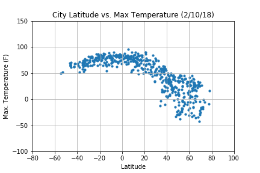
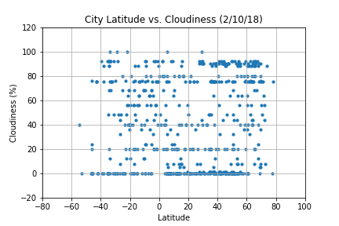

Conclusion
Summary: Shown below are four scatterplots comparing four different factors against a city's latitude. These four factors each told a unique story with each of its respective scatterplot.
- With the maximum temperature scatterplot, it showed that regions near the equator exhibit a higher maximum temperature compared to other regions.
- With the wind speed scatterplot, it showed that regions near the North Pole exhibit higher wind speeds compared to other regions.
- With the humidity scatterplot, it showed that regions near the North Pole portray drier climates compared to other regions.
- With the cloudiness scatterplot, it showed that regions near the North Pole have a higher chance of a cloudy sky compared to other regions.
You may click on any image below to see a more detailed analysis.
Max Temperature
Wind Speed

Humidity

Cloudiness

For a more detailed list, you can click on the button below to head to the list of factors page.
List of Factors